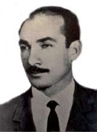

Ceylan Çalýþkan [1929-1963]

Abdülkadir Ceylân Çalýþkan 1929 yýlýnda Emirdað'da dünyaya gelmiþti. Babasý Mehmed Çalýþkan, annesi ise Ayþe Çalýþkan'dý.Yýllarca Bediüzzaman Said Nursi Hazretlerinin hizmetinde bulundu. 1963 yýlýnda acý bir trafik kazasý ile vefat etti. Ceylân aðabey Aðustos 1963'te Bakýrköy istikametinde meydana gelen trafik kazasýnda, bindiði minibüste vefat ettiðinde nüfus cüzdanýnýn arasýndan þu vesika çýkmýþtý:"Ceylân benim vekilimdir. Nur'a ait iþleri benim hesabýma yapar." Said Nursî
.....
Küçük yaþta annesini kaybeden Ceylân Çalýþkan annesiz, öksüz olarak büyüyordu. 1944'ün yaz sonlarýnda Emirdað'a gelen Üstada bütün Çalýþkan ailesi yardýma ve hizmete koþmuþtu.
Mehmed Çalýþkan, oðlu Ceylân'la birlikte Üstada nasýl gittiðini þöyle anlatmaktadýr:
"Bir gün Ceylân'la beraber Üstadý ziyarete gitmiþtim. Üstad:
"Oðlun mu?'
"Evet.'
"Fýrsat düþmüþken çocuðun mektep iþini danýþayým dedim:
"Efendim, çocuk çalýþkan ve zeki, onu yüksek mekteplere vermek istiyorum, ne buyurursunuz?"
"Ýyi! Zeki ve çalýþkan olduðu için evvelâ benden iman dersi alsýn, sonra yüksek mektebe devam etsin' diye buyurdu.
"Böyle bir cevap beklememekle beraber, hemen razý oldum. Zaten Üstadýn her emrini yerine getirmeye çalýþýrdýk. Ev iþlerimizi olduðu gibi, hususî meselelerimizi dahi hep kendisine danýþýrdýk.
"Ceylân'a verdiði ilk ders: Sýdk!
"Buyurdu ki:
"Daima doðru olacaksýn. Hiç yalan söylemeyeceksin. Sana bir milyon lira verirler, sen bana ihanet edebilirsin, fakat ismin ebediyyen kötü anýlýr.'
"Ceylân'ýn askerlik çaðý geldiðinde, Üstad onun biraz geç asker olmasýný istemiþti. Müracaatlarýmýzý yapamadýk ve Ceylân asker oldu.
"Üstadýna 'Allaha ýsmarladýk' diye veda ederken, hakikaten maddi-manevî hastalýklarýmýzýn derin ilmiyle ve derya gibi olan þefkatiyle tedavi eden Nur'larýn Müellifi yavruma þu nasihatý vermiþti:
'Sen Risale-i Nur'un esaslarýný hareketlerinle yaþa!"
"Sonra bir not verdi. Bu notlarda, 'Benim þarktaki dostlarýma ve talebelerime selâm olsun!' diye yazmýþtý.
"Ceylân Urfa'ya gidince bunu bir Nakþî þeyhine verince, þeyh kaðýdý cebine koymuþ. 'Bunu benim için yazmýþ' demiþ.
"Aradan epeyce zaman geçti. Ceylân, usta asker oldu. izin sýrasý gelince iznini almýþ, fakat zekâ ve çalýþkanlýðýndan dolayý, mükâfat izniyle beraber iki ay! Durumu bana bildirdi, 'Baba, ne yapayým?' diye soruyordu. Tabiî, biz de Üstada sorduk.
"Tamam tamam kardaþým, Ceylân Urfa medresesinde kalsýn' diyerek cevap vermiþti.
"Biz biraz üzüldük. Aylar sonra çocuðu görecektik, o da olmadý. Tabiî emir Üstadýmýzýndý. Ceylân Urfa medresesinde kalmýþtý.
"Bir ara o medreseye polisler gelip Ceylân'ýn ifadesini almýþlarsa da neticede birþey çýkmadý.
"Nihayet askerliðini bitirdi ve geldi. Bir gece evde kaldýktan sonra ertesi gün, Üstad.
"Bak kardaþým, senin çok evlâdýn var; bunu da bana ver' dedi.
"Üstadým, biz Ceylân'ý daha evvel size vermiþtik' dedim.
"Böylece, Ceylân yataðýný evden toplayýp, Üstadýn yanýna gitti."
"Ceylân'ý dünyaya vermeyeceðim"
Üstad, Ceylân'dan çok memnundu. "Ceylân kabiliyetli bir genç. Dünya iþini de yapar, ahiret iþini de. Fakat onu dünyaya vermeyeceðim" derdi.
Bir gün "Ceylân, senin hayatýn uhrevîdir. Eðer dünyevî olsa pek azdýr!" diyen Üstad, babasý Mehmed Çalýþkan'a ise, "Bu oðlunun iyiliði, babanýn sana ettiði dualarýnýn neticesidir" demiþti.
"Ben oklava yedim"
üstad bir yanlýþlýktan dolayý hiddet edip, küçük kulunç deðneði ile vurduktan sonra, "Size baklava alacaðým yemeniz için" deyince, "Ben oklava yedim Üstadým" diye, yine üstadý tebessüm ettirmiþ.
Kaynak: risale-inur.org